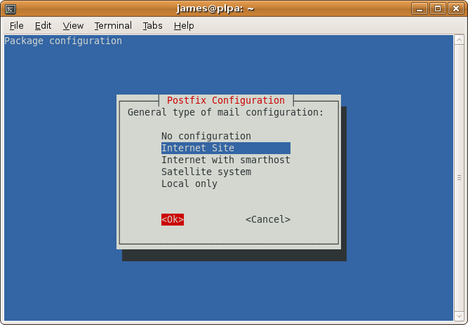

Postfix with Dovecot
Recipes > Core Recipes > .. > Postfix with Dovecot| Pre-Requisites: | None |
|---|---|
| Required Reading: | None |
Contents
In the last tutorial we set up a mail relay. In this tutorial we'll use the existing database to set up a mail server which the mail relay can forward emails to and which will take its configuration from the same PostgreSQL database the mail relay does.
We'll call this server maila and it will have an IP address 188.40.40.173.
Create the New Server
Follow the instructions to create a new empty OpenVZ VE with its own IP address and a hostname of maila.example.com. This server must be publicly accessible on the internet because users will connect to it to send email via SMTP and to check email via POP3 or IMAP. Since this server will store user data, you might like to give it more space than the others.
Here's the command I used, yours will be different:
$ sudo vzctl create 173 --ostemplate debian-5.0-amd64-minimal --config vps.lv $ sudo vzctl set 173 --hostname maila.example.com --ipadd 188.40.40.173 --nameserver 213.133.98.98 --nameserver 213.133.99.99 --nameserver 213.133.100.100 --diskspace 18G:19G --numothersock 250 --privvmpages=256000 --onboot yes --save
Once the VE is created you'll need to follow each of the main configuration instruction articles for the new VE:
Install the Main Packages
$ sudo apt-get install postfix-pgsql
During the install you'll be asked some questions. Answer as follows:

Select Ok
Select Internet Site
Accept the default which should be correct if you set your fully qualified domain name properly.
Aliases
The install will continue and during the output you'll see this warning:
WARNING: /etc/aliases exists, but does not have a root alias.
When mail is to be delivered locally, the local delivery agent runs each local recipient name through the aliases database. The mapping does not affect addresses in message headers. Local aliases are typically used to implement distribution lists, or to direct mail for standard aliases such as postmaster to real people.
If you run the command below you'll see that /etc/aliases is being used for local aliases:
$ sudo postconf alias_maps alias_maps = hash:/etc/aliases
It is important that the postmaster email address works so make sure that postmaster points to root and root to your own username or your email address, e.g. like this:
... postmaster: root root: postmaster@yourdomain.tld ...
or like this (if owner is your own username):
... postmaster: root root: owner ...
Edit /etc/aliases with one of these changes.
Whenever you modify /etc/aliases, you must run this afterwards:
$ sudo newaliases
Then restart Postfix:
$ sudo /etc/init.d/postfix restart
Configure the PostgreSQL Database
Next install the PostgreSQL client. You don't need the server because you'll be connecting to the PostgreSQL server on PLP A.
$ sudo apt-get install postgresql-client
We'll use the database running on the PLP server for all our options. We need to add a new user called maila_admin. On the PLPA server run this:
$ sudo -u postgres createuser -SRDP maila_admin Enter password for new role: Enter it again:
We'll use the password maila_admin_pass.
Still on PLPA edit /etc/postgresql/8.3/main/pg_hba.conf file:
sudo -u postgres vim /etc/postgresql/8.3/main/pg_hba.conf
and add these lines at the end:
# Allow maila_admin to connect to the mail database from 188.40.40.* host mail maila_admin 188.40.40.0/24 md5
Restart PostgreSQL on PLPA:
sudo /etc/init.d/postgresql-8.3 restart
Check you can now sign in from maila with the password you just set up:
$ psql -W -U maila_admin mail -h 188.40.40.171
Create the Postfix Configuration
Back on Mail A make a /etc/postfix/postgresql directory to keep the PostgreSQL configuration in:
$ sudo mkdir /etc/postfix/postgresql
Now make sure you are in a directory you have write access to such as your home directory:
$ cd
Now run these commands to create text files with the required postfix configuration in your home directory and move them to the /etc/postfix/postgresql directory. The beauty of this approach is that you can copy and paste everything below onto the command line rather than having to manually create and populate the 6 files.
You'll need to change the password in each example from maila_admin_pass to whatever you used for the maila_admin user. You'll also need to change hosts entry to the PostgreSQL host hosting the database. In my case this is 188.40.40.171.
cat <<EOF> virtual_mailbox_domains.cf user = maila_admin password = maila_admin_pass dbname = mail query = SELECT domain AS virtual FROM domain WHERE domain='%s' AND node='maila' hosts = 188.40.40.171 EOF sudo mv virtual_mailbox_domains.cf /etc/postfix/postgresql cat <<EOF> virtual_mailbox_maps.cf user = maila_admin password = maila_admin_pass dbname = mail query = SELECT substring(email FROM '@(.*)')||'/'||substring(email FROM '(.*)@') FROM mailbox WHERE email='%s' AND node='maila' # MYSQL Version: query = SELECT CONCAT(SUBSTRING_INDEX(email,'@',-1),'/',SUBSTRING_INDEX(email,'@',1),'/') FROM mailbox WHERE email='%s' AND node='maila' hosts = 188.40.40.171 EOF sudo mv virtual_mailbox_maps.cf /etc/postfix/postgresql cat <<EOF> virtual_mailbox_limit_maps.cf user = maila_admin password = maila_admin_pass dbname = mail query = SELECT quota FROM mailbox WHERE email='%s' AND node='maila' hosts = 188.40.40.171 EOF sudo mv virtual_mailbox_limit_maps.cf /etc/postfix/postgresql
Now set all the permissions:
$ sudo chmod -R o= /etc/postfix/postgresql $ sudo chown -R root:postfix /etc/postfix/postgresql
Now configure postfix. Replace maila.example.com with the correct fully qualified domain name.
sudo postconf -e 'myhostname = maila.example.com' sudo postconf -e 'mydestination = maila.example.com, localhost, localhost.localdomain' sudo postconf -e 'mynetworks = 127.0.0.0/8' sudo postconf -e 'message_size_limit = 30720000' sudo postconf -e 'smtpd_recipient_restrictions = permit_mynetworks, reject_unauth_destination' sudo postconf -e 'virtual_create_maildirsize = yes' sudo postconf -e 'virtual_maildir_extended = yes' sudo postconf -e 'virtual_mailbox_limit_maps = proxy:pgsql:/etc/postfix/postgresql/virtual_mailbox_limit_maps.cf' sudo postconf -e 'virtual_mailbox_limit_override = yes' sudo postconf -e 'virtual_maildir_limit_message = "The user you are trying to reach is over quota."' sudo postconf -e 'virtual_mailbox_domains = proxy:pgsql:/etc/postfix/postgresql/virtual_mailbox_domains.cf' sudo postconf -e 'virtual_mailbox_maps = proxy:pgsql:/etc/postfix/postgresql/virtual_mailbox_maps.cf' sudo postconf -e 'virtual_mailbox_base = /home/vmail' sudo postconf -e 'virtual_uid_maps = static:5000' sudo postconf -e 'virtual_gid_maps = static:5000' sudo postconf -e 'virtual_overquota_bounce = yes'
Now set up the proxy maps:
sudo postconf -e 'proxy_read_maps = $local_recipient_maps $mydestination $virtual_mailbox_maps $virtual_mailbox_domains $relay_recipient_maps $relay_domains $canonical_maps $sender_canonical_maps $recipient_canonical_maps $relocated_maps $virtual_mailbox_domains $mynetworks $virtual_mailbox_limit_maps'
Afterwards we create the SSL certificate that is needed for TLS:
$ cd /etc/postfix $ sudo openssl req -new -outform PEM -out smtpd.cert -newkey rsa:2048 -nodes -keyout smtpd.key -keyform PEM -days 365 -x509
Here's what you'll need to type:
Country Name (2 letter code) [AU]:GB State or Province Name (full name) [Some-State]:. Locality Name (eg, city) []:London Organization Name (eg, company) [Internet Widgits Pty Ltd]:Your Company Ltd Organizational Unit Name (eg, section) []:. Common Name (eg, YOUR name) []:maila.example.com Email Address []:
Then change the permissions of the smtpd.key:
$ sudo chmod o= /etc/postfix/smtpd.key $ sudo chown root /etc/postfix/smtpd.key
XXX Shouldn't this be chown root:postfix /etc/postfix/smtpd.key ??
Tip
For Outlook Express 4 and Microsoft Exchange 5.0 you might also want to set this:
sudo postconf -e 'broken_sasl_auth_clients = yes'
This adds a second AUTH line in the SMTP response after an ehlo statement that starts AUTH=PLAIN so that broken clients can recognize that they may use SMTP AUTH.
Tip
You'll notice we haven't set up any transport maps, rely domains, virtual aliases, forwarding and the like. This is because by the time an email reaches here it should have already been to one of the PLPs which means the only emails which should arrive at the server will be ones for which there is a mailbox and therefore the only thing Postfix should have to do is deliver those mails.
If you want to set up forwarding and relays you can, just use the configuration from the protocol level proxies as an example but there really isn't any need. All forwarding etc should be handled by the PLP.
Now restart Postfix:
$ sudo /etc/init.d/postfix restart
Installing Dovecot
$ sudo apt-get install dovecot-pop3d dovecot-imapd
Integrate with Postfix
Dovecot integrates with Postfix in two ways in addition to being a standalone POP3 and IMAP server:
- Dovecot provides SASL authentication for Postfix's SMTP server component
- Dovecot provides its own local delivery agent (LDA) to replace Postfix's virtual program to take mail from Postfix and save it to the correct place on the hard disk
The advantages of the Dovecot LDA are that it:
- can updated indexes as the mail is delivered so that operations such as search are faster in IMAP
- provides support for quotas
To make Postfix use Dovecot for SMTP authentication using SASL change these settings:
sudo postconf -e smtpd_sasl_type=dovecot sudo postconf -e smtpd_sasl_path=private/auth sudo postconf -e smtpd_sasl_auth_enable=yes sudo postconf -e 'smtpd_tls_cert_file = /etc/postfix/smtpd.cert' sudo postconf -e 'smtpd_tls_key_file = /etc/postfix/smtpd.key' sudo postconf -e 'smtpd_recipient_restrictions = permit_mynetworks, permit_sasl_authenticated, reject_unauth_destination'
There are also two settings you should apply which we'll use for testing but which we'll disable later on:
sudo postconf -e smtpd_use_tls=no sudo postconf -e smtpd_tls_auth_only=no
Now to specify dovecot as the local delivery agent you need to edit /etc/postfix/master.cf and add the following lines at the end:
dovecot unix - n n - - pipe
flags=DRhu user=vmail:vmail argv=/usr/lib/dovecot/deliver -d ${recipient}
Now change these settings:
sudo postconf -e virtual_transport=dovecot sudo postconf -e dovecot_destination_recipient_limit=1
Now we create a user and group called vmail with the home directory /home/vmail. This is where all mail boxes will be stored.
$ sudo groupadd -g 5000 vmail $ sudo useradd -g vmail -u 5000 vmail -d /home/vmail -m
Now restart postfix:
sudo /etc/init.d/postfix restart
Configuring Dovecot
First edit /etc/dovecot/dovecot.conf and check the protocols line is as follows (it should be):
protocols = imap imaps pop3 pop3s
Then in the same file just below these lines:
#ssl_cert_file = /etc/ssl/certs/dovecot.pem #ssl_key_file = /etc/ssl/private/dovecot.pem
add these:
ssl_cert_file = /etc/postfix/smtpd.cert ssl_key_file = /etc/postfix/smtpd.key
The same certificate will then be used for SMTP, IMAP, IMAPS, POP and POP3.
Now set how where mail should be stored (further down in the file):
mail_location = maildir:/home/vmail/%d/%n
Now look for the section called auth default and within it, change the mechanisms option to plain login as shown below.
auth default {
# Space separated list of wanted authentication mechanisms:
# plain login digest-md5 cram-md5 ntlm rpa apop anonymous gssapi
# NOTE: See also disable_plaintext_auth setting.
mechanisms = plain login
Within the same section uncomment the passdb sql section and update it to look like this:
passdb sql {
args = /etc/dovecot/dovecot-sql.conf
}
Also update userdb to let Dovecot know that passwords are stored in a database and userdb to tell specify where the mails get stored:
userdb static {
args = uid=5000 gid=5000 home=/home/vmail/%d/%n allow_all_users=yes
}
You'll also need to comment out the passdb pam and userdb passwd sections in the same area because we don't want Dovecot to consider system users.
Now look for the socket listen sections. There are two of them. Comment them out and add this instead:
socket listen {
master {
path = /var/run/dovecot/auth-master
mode = 0600
user = vmail
}
client {
path = /var/spool/postfix/private/auth
mode = 0660
user = postfix
group = postfix
}
}
Replace the protocol lda section near the top of the file with this:
protocol lda {
log_path = /home/vmail/dovecot-deliver.log
auth_socket_path = /var/run/dovecot/auth-master
postmaster_address = postmaster@example.com
mail_plugins = cmusieve
global_script_path = /home/vmail/globalsieverc
}
(but change the postmaster_address to your own email)
Now update /etc/dovecot/dovecot-sql.conf with these contents:
driver = pgsql connect = host=188.40.40.171 dbname=mail user=maila_admin password=maila_admin_pass default_pass_scheme = MD5-CRYPT password_query = SELECT email as user, password FROM mailbox WHERE email='%u';
Remember to update the host and password for the correct values.
Allow plain text logins for the moment while we test:
disable_plaintext_auth = no
Set the permissions so that Postfix can access the configuration too:
$ sudo chgrp vmail /etc/dovecot/dovecot.conf $ sudo chmod g+r /etc/dovecot/dovecot.conf
Now restart dovecot:
$ sudo /etc/init.d/dovecot restart Restarting IMAP/POP3 mail server: dovecot.
Check everything started OK:
$ sudo tail -f /var/log/mail.log May 21 21:48:20 maila dovecot: Dovecot v1.0.15 starting up May 21 21:48:21 maila dovecot: auth-worker(default): pgsql: Connected to 188.40.40.171 (mail)
Creating Accounts
Now that both the Postfix relay, this Postfix instance, PostgreSQL and Dovecot are all set up we can create some test accounts.
Note
If you already have configuration in the database from testing the PLP setup remove it now. Obviously, doing this erases your existing configurtaion so don't do it if you want to keep your data:
DELETE FROM mailbox; DELETE FROM forward; DELETE FROM transport; DELETE FROM relay; DELETE FROM domain;
Let's imagine we have the sub domain server1.example.com and want to have the email address james@server1.example.com. We want all mail to be directed to plpa but from there we want it directed to maila.example.com.
Let's setup the MX record first. It looks like this:
server1.example.com MX 10 plpa.example.com
Now in the transport table we need to tell plpa to send all mails addressed to server1.example.com to maila.example.com. We do this by adding this row (if you followed the postfix relay tutorial it should already be there):
mail=> USE mail;
mail=> INSERT INTO transport (domain, transport) VALUES ('server1.example.com', 'smtp:[188.40.40.173]');
Notice that we use the IP address of maila.example.com to avoid a DNS lookup.
Next we need to add some rules for maila. First we need to tell it that it should handle the server1.example.com domain:
mail=> INSERT INTO domain (domain, node) VALUES ('server1.example.com', 'maila');
Set up the crypt functions we need:
$ sudo -u postgres createlang pgpsql mail $ sudo -u postgres psql mail
Once connected, paste these commands:
GRANT SELECT ON domain, forward, relay, mailbox, transport TO maila_admin; CREATE OR REPLACE FUNCTION crypt(text, text) RETURNS text AS '$libdir/pgcrypto', 'pg_crypt' LANGUAGE C IMMUTABLE STRICT; CREATE OR REPLACE FUNCTION gen_salt(text) RETURNS text AS '$libdir/pgcrypto', 'pg_gen_salt' LANGUAGE C VOLATILE STRICT;
Then exit:
\q
Finally we create a user for the james account. Back as the mail_admin user:
mail=> INSERT INTO mailbox (email, password, quota, node) VALUES ('james@server1.example.com', crypt('yourpassword', gen_salt('md5')), 10485760, 'maila');
To test this setup, let's send an email via SMTP to the plpa.example.com server and check it ends up in the /home/vmail directory on the maila.example.com server. On plpa.example.com server
Testing the Server
To see if Postfix is ready for SMTP-AUTH and TLS, install telnet:
$ sudo apt-get install telnet
Then run:
$ telnet 127.0.0.1 25
Tip
If you get an error like this:
Trying 127.0.0.1... telnet: Unable to connect to remote host: Connection refused
It means telnet can't connect. You can see if postfix is running like this:
$ sudo netstat -tap | grep smtp
If you get no output, check the mail logs:
$ sudo tail -f /var/log/mail.log
An error such as postfix/master[1511]: fatal: pipe: Cannot allocate memory might be an indication that some resources are not available. If you are running under OpenVZ run this:
$ sudo cat /proc/user_beancounters
If any of the numbers in the last column are not 0, you need to increase the limit. In my case numothersock was too low at 120 so I stopped the VE, set it to 200 and restarted the VE. From the HE:
$ sudo vzctl stop 2 $ sudo vzctl set 2 --numothersock 200 --save $ sudo vzctl start 2
This time the logs should say postfix/master[593]: daemon started -- version 2.5.5, configuration /etc/postfix. Now try telent again.
After you have established the connection to your Postfix mail server type:
ehlo localhost
If you see the lines:
250-STARTTLS
and:
250-AUTH PLAIN LOGIN
(or if you see 250-AUTH LOGIN PLAIN)
Try sending an email:
$ telnet 127.0.0.1 25 Trying 127.0.0.1... Connected to 127.0.0.1. Escape character is '^]'. 220 maila.example.com ESMTP Postfix (Debian/GNU) ehlo localhost 250-maila.example.com 250-PIPELINING 250-SIZE 30720000 250-VRFY 250-ETRN 250-AUTH PLAIN LOGIN 250-AUTH=PLAIN LOGIN 250-ENHANCEDSTATUSCODES 250-8BITMIME 250 DSN mail from:<james@example.org> 250 2.1.0 Ok rcpt to:<james@server1.example.com> 250 2.1.5 Ok data 354 End data with <CR><LF>.<CR><LF> Test 1 . 250 2.0.0 Ok: queued as 05BD1186DE quit 221 2.0.0 Bye Connection closed by foreign host.
You should see the email has arrived:
$ sudo ls /home/vmail/server1.example.com/james/new
1245009875.P6785Q0M251921.maila.example.com
$ sudo cat /home/vmail/server1.example.com/james/new/1245009875.P6785Q0M251921.maila.example.com
Return-Path: <james@example.org>
Delivered-To: james@server1.example.com
Received: from localhost (localhost.localdomain [127.0.0.1])
by maila.example.com (Postfix) with ESMTP id 05BD1186DE
for <james@server1.example.com>; Sun, 14 Jun 2009 20:04:18 +0000 (UTC)
Message-Id: <20090614200429.05BD1186DE@maila.example.com>
Date: Sun, 14 Jun 2009 20:04:18 +0000 (UTC)
From: james@example.org
To: undisclosed-recipients:;
Test 1
You can now redirect mail and forward it via the PLP and host it via the mail user server.
Reading Mail with mutt
You can get mutt like this:
$ sudo apt-get install mutt
You can read a local mailbox like this:
$ sudo -u vmail mutt -f /home/vmail/server1.example.com/james
This isn't much use though. Instead you should read the mailbox using one of the POP, POPS, IMAP or IMAPS protocols which is what your users will do.
Read a remote mailbox like this:
$ mutt
Then press c and type one of the following lines, depending on the protocol you want to use:
imaps://james@server1.example.com@maila.example.com/ imap://james@server1.example.com@maila.example.com/ pops://james@server1.example.com@maila.example.com/ pop://james@server1.example.com@maila.example.com/
You will need to press o to accept the certificate once, and then enter the password you set up earlier (yourpassword).
Here is what you see:
q:Quit d:Del u:Undel s:Save m:Mail r:Reply g:Group ?:Help 1 May 18 james@example.com (0.1K)
You should make sure each of the 4 protocols works correctly.
Sending a Welcome Email
When you create a new email account and try to fetch emails from it (with POP3/IMAP) you will probably get error messages saying that the directory doesn't exist. The directory is created automatically when the first email arrives for the new account so it's a good idea to send a welcome email for every account you create.
Install the mailx package:
$ sudo apt-get install mailx
Send an email to james@server1.example.com like this:
$ mailx james@server1.example.com
You will be prompted for a subject:
Subject: Welcome
Press enter then enter youe message. When you are finished press Ctrl+D. You'll be promted to CC the email to other recipients:
Cc:
Press enter to skip that part and the message gets sent.
The mail should have been delivered and the new directories created:
$ sudo ls -la /home/vmail/server1.example.com/james total 24 drwx------ 5 vmail vmail 4096 May 18 00:22 . drwx------ 3 vmail vmail 4096 May 18 00:22 .. drwx------ 2 vmail vmail 4096 May 18 00:22 cur -rw------- 1 vmail vmail 16 May 18 00:22 maildirsize drwx------ 2 vmail vmail 4096 May 18 00:22 new drwx------ 2 vmail vmail 4096 May 18 00:22 tmp
Testing Authentication
At the moment, if you connect via telnet from a remote machine and try to send an email via the server you've just set up you will get a "Relay access denied" error.
In order to be able to send emails from remote locations you'll need to login.
Tip
Full information on how to test SMTP connections can be found in the Testing Mail Servers guide. This is just a quick summary.
First create an authentication header:
$ perl -MMIME::Base64 -e 'print encode_base64("\000james\@server1.example.com\000yourpassword")'
AGphbWVzQHNlcnZlcjEuZXhhbXBsZS5jb20AeW91cnBhc3N3b3Jk
Start telnet and enter some commands:
$ telnet localhost smtp Trying 127.0.0.1... Connected to localhost.localdomain. Escape character is '^]'. 220 plpa.example.com ESMTP Postfix (Debian/GNU) ehlo localhost 250-maila.example.com 250-PIPELINING 250-SIZE 30720000 250-VRFY 250-ETRN 250-STARTTLS 250-ENHANCEDSTATUSCODES 250-8BITMIME 250 DSN auth plain AGphbWVzQG5ldy4zYWltcy5jb20AcGFzc3dvcmQ= 235 2.0.0 Authentication successful mail from:<sales@example.com> 250 2.1.0 Ok rcpt to:<james@server1.example.com> 250 2.1.5 Ok data 354 End data with <CR><LF>.<CR><LF> Hi James, This is just test message 1. . 250 2.0.0 Ok: queued as 4065C7C6DF quit 221 2.0.0 Bye Connection closed by foreign host.
You should find the email gets through.
Hardening up the server
Warning
Logging to the server over an unencrypted connection is useful for testing but a very bad idea the rest of the time. In this section you'll learn how to disable it.
The first step is to tell Postfix that you only want to allow TLS encrypted connections for sending emails:
sudo postconf -e smtpd_tls_auth_only=yes sudo postconf -e smtpd_use_tls=yes
Then restart Postfix:
sudo /etc/init.d/postfix restart
Now for Dovecot. Edit /etc/dovecot/dovecot.conf and change this value to no:
disable_plaintext_auth = yes
Now restart Dovecot:
sudo /etc/init.d/dovecot restart
Tip
If you want to allow insecure plain text login for people who can't deal with encrypted logins you can also set this option in the same Dovecot config file but it is best to leave it unless your users have problems:
disable_plaintext_auth = no
Tip
It is still possible to test connections even when TLS is being used. See Testing Mail Servers for details.
Your server is now set up and ready for real use.
You should return to the Protocol Level Proxies recipe to learn how to configre anti-spam and anti-virus software on this server, or how to set up a second protocol level proxy for resilience.
Migrating Existing Mailboxes
Install the imapsync program:
sudo apt-get install imapsync
This tool will connect to one server and copy all the messages across from one IMAP mailbox to the other. You can also use it to move all the emails in one mailbx into a subdirectory of those in another mailbox.
imapsync --host1 balmer.example.com --user1 james@example.com --password1 yourpassword1 --host2 127.0.0.1 --user2 james@server1.example.com --password2 yourpassword2 --ssl1 --ssl2 --authmech1 plain --authmech2 plain --regextrans2 's/INBOX/2008\.INBOX/g' --subscribe
You can then see the new folder.
$ sudo -u vmail mutt -f /home/vmail/server1.example.com/james/.INBOX.Dermoscopy